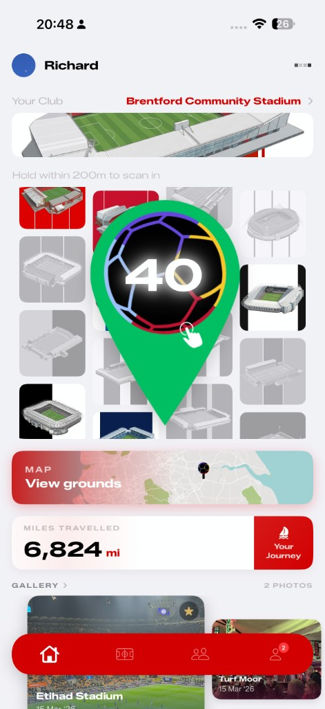
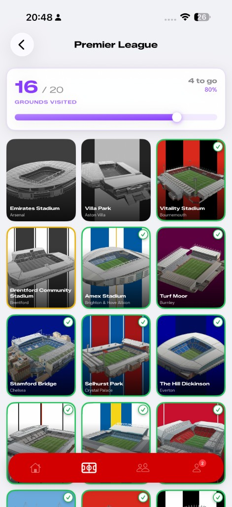
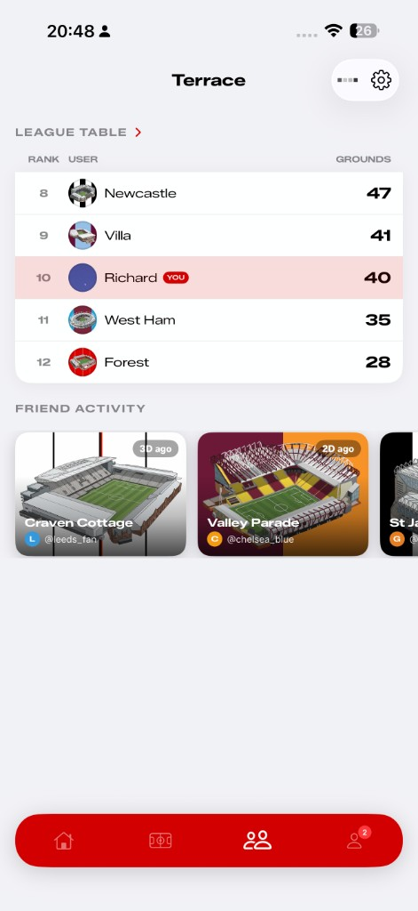
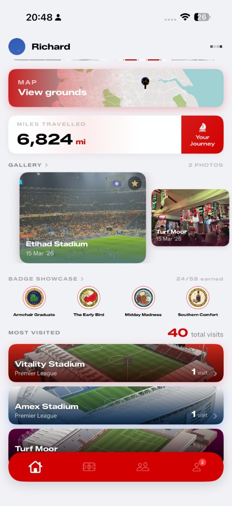
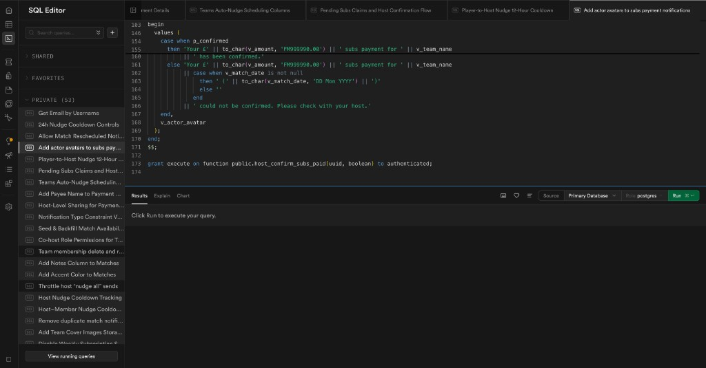

Nudge
The best product advice I kept receiving was simple: solve a problem you actually live with. Not a hypothetical, not a gap in the market you read about, something real, something personal. For me, that problem showed up over Christmas, ten games of padel deep.
I organised every single session. By January, I had no idea who had paid, who hadn't, and was dreading the awkward task of chasing a group of mates I'd known most of my life. One had flown to the other side of the world. Another was waiting on payday. All completely reasonable, but I was the one sat there feeling guilty about money that was owed to me. The person who did all the organising was somehow also the one doing all the chasing.
That tension, the organiser always ends up the one at a disadvantage, became the seed for Nudge.
"The most valuable skill of the 21st century is knowing what to do with AI." Pedro Domingos
Nudge was born at the crossover of 2025 and 2026, right at the peak of my curiosity about what AI could actually do in a product, not just generate text, but handle the uncomfortable, repetitive human moments most apps ignore. The kind of friction people don't talk about but deal with constantly.
I'd built apps before. A football grounds tracker that never shipped, but taught me everything I needed: where I cut corners, what I'd do differently, how to think about architecture before writing a single line. Nudge was where those lessons got applied. This was the one I was going to take seriously.
My early apps had a recurring flaw. Beautiful interfaces. Zero infrastructure. I'd pour everything into the frontend, the kind of UI that could genuinely keep someone coming back, and then hit a wall the moment I needed anything to actually persist. No users, no data, no backend. A stunning shop front with nothing behind the door.
With Nudge, I made a deliberate call to flip that entirely. Backend first, frontend later, even though every instinct I had was pulling me toward the design work. I sat with the unsexy stuff: databases, auth flows, relational structure, the plumbing that nobody sees but everything depends on.




The backend is the 2026 equivalent of a receptionist. Nobody notices it when it's working. Everyone notices it when it's not. I wasn't going to make that mistake again.
What surprised me was how quickly it clicked. The concept of a relational backend, users connected to friends, friends connected to groups, groups triggering notifications, is surprisingly intuitive once you stop thinking of it as infrastructure and start thinking of it as a model of how people actually interact. It maps to real life. That realisation made it far less intimidating than I'd built it up to be.
Using Supabase as the foundation was a deliberate choice for scalability. This wasn't going to be a shell, it needed room to grow. Within roughly a day, the core was live and tested: user authentication, friend connections, communities and teams, and a notification layer all operational on a basic app shell.

I came into the frontend with confidence. Design had always been my thing, the part of any project I gravitated toward, the answer I'd give when someone asked what I enjoyed most about marketing. Visuals, layouts, making something feel considered. I thought this was going to be the reward for getting the backend out of the way.
I was wrong. Not about the design, about the scale of it. Building an iOS app isn't designing a few screens. It's designing every screen, every state, every decision a user could possibly make and then designing what happens when they make the wrong one. Layer after layer after layer, each one revealing another underneath.
Joining a team, sending a nudge, viewing a balance, handling edge cases, writing a privacy policy. None of it appears by accident. User experience design is strategic thinking dressed up as simplicity. The cleaner something feels to use, the more invisible work went into it. The very website you're reading this on is a good example. What looks simple on the surface has a lot of thought behind the animations and interactions. That principle runs through everything I build.
That gap between how effortless something looks and how deliberate it actually is, I didn't fully appreciate it until I was deep inside it. What this process taught me was empathy as a design tool. You have to consistently step outside your own understanding of the app, where the buttons are, what the flows mean, and inhabit the perspective of someone opening it for the first time. That mental shift is a skill, and it takes time to develop. I'm a better product thinker for having been forced to learn it.